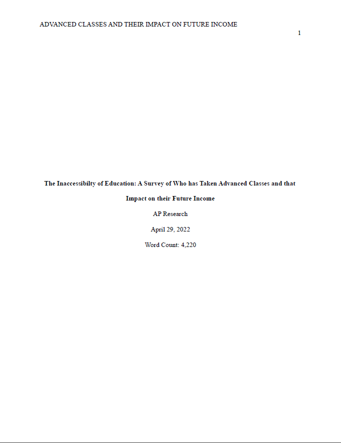

WRITING
Here will be a backlog of my previous academic writing, the good and especially the bad. Writings from high school, college, and other miscellaneous documents. As of now, I've uploaded two papers I did for my AP Capstone course. Warning for discussion of heavy topics, including sexual violence, misogony, and racism.
Anna Buan • (AP Seminar) • Individual Written Argument • 11 December 2020 • Word count: 1797
In 2017, dozens of sexual assault, sexual abuse, and rape accusations against the film maker Harvey Weinstein came to light. He was convicted this year, and continues to be a big example of sexual abuse in Hollywood. However, if this issue is just laid to rest, his conviction does not change much. These sources deal with issues of social justice - an unequal distribution of wealth, resources, and power that leads to predatory dynamics in the television and film industries. This topic is important because people are enticed by fame and fortune, only to be led into a work environment that is poised to hurt and exploit them. It is valuable to understand its existence and how the foundations of the entertainment industry allow it to happen. By listening to Tarana Burke’s TED Talk about her Me Too movement, I was reminded of when many celebrities banded together under the same hashtag, often to talk about their Hollywood abusers. With the knowledge of how little Hollywood cares for people, I wanted to know exactly how the power distribution in the entertainment industry affected (and facilitated) these behaviors. The entertainment industry does not in any way attempt to protect those who work for it; in fact, it could be argued that it is directly responsible for abusers’ access to their victims, especially as the public responds and the system does nothing.
The system at play in these industries will always let those with power abuse others. Roman Polanski, Woody Allen, and Kevin Spacey (all notably white men with influence and authority in the film industry) are known predators, but were not sentenced for any crimes. Though Polanski is technically a fugitive of the law, Hollywood remains supportive, as one hundred notable members of the film industry called for his release in 2009. It took The Academy forty-one years after he was arrested and immense pressure from the public to drop Polanski as a member. And this is only one man; there are thousands of victims of sexual misconduct in Hollywood. Through all of this, it is clear that Hollywood does not care. According to Nasim Mansuri of the workshop Young Writer’s Endeavour, studios do not drop people “from a place of compassion”, rather, it comes from the fans and public forcing them into accountability - and only then. Of course, her article looks through Hollywood with a very small lens, only looking for its defects (Mansuri). More broadly, Tarana Burke is a very influential activist, with her idea of Me Too becoming a powerful international movement. In this TED Talk, she discusses the movement and reflects on its purpose and public image. She argues that we should work to dismantle the foundations of sexual violence (Burke). The implications of her arguments show that the fight to end sexual exploitation and abuse is far from over. She mentions how sexual abusers are still in positions of power and sexual violence is still rampant, but it also has a message of hope for the future when that has ended. The article “How Common Is Sexual Misconduct in Hollywood?” similarly mentions how those who have more privilege and power over others (i.e. old white men) are placed in positions where they can continue to prey. Maria Puente and Cara Kelly are writers for USA Today, with the latter being a former employee of the Washington Post. In this article, they argue that the amount of women who have been sexually abused, exploited, assaulted, or harassed is an overwhelming majority. It also claims that sexual misconduct is not dealt with properly, and most of the assailants are older white men - especially those in positions of power (Puente and Kelly). The entertainment industry has a devastating amount of abuse that is inherent to the system, and it is a beast that cannot be dealt with easily. It shows all the behavior that the public has been blinded to by the lights of Hollywood. With this baseline established, it is also important to know how these people are put into these positions to abuse others in the first place.
There is power involved in any relationship. Between a Hollywood big shot producer, actor, director, or virtually anyone else, the power falls to the Hollywood elite. The foundations of power imbalance often stems from socioeconomic inequality, authority and recognition, and gender roles. Jon D. Wisman, professor of economics at American University first defines exploitation as “using political or economic power to gain advantage at someone else’s expense” (in film, one would see this when the production places actors into compromising or uncomfortable situations) and he explains that economics is most frequently a means for exploitation (Wisman, 896). Both fame and fortune comes to those with consistent work in Hollywood, and it is easy for them to use these material things to exploit other workers and silence victims, both of which are all too common in that industry (e.g. blackballing). Stan Taubman, PhD, working at UC Berkeley’s graduate social work program and, wrote for Social Work, says that “[i]n patriarchal cultures women and children are viewed as men’s property” (Taubman, 12-14). The idea of male dominance also comes down to biology, as Darwin notes that males were often the dominant ones, while “females [remain] passive” (Wisman, 899). This view that most cultures hold results in the majority of abusers being men - as they have the power in relationships with others. The majority of the Hollywood elite are men, and all have accumulated much wealth. Both of these aspects lends to them being readily able to hurt those who work for and/or with them.
Now that the means are established, the problem lies in both the insides and outsides of the industry, neither of which its workers are safe from. Angie L. Cradock works as Senior Research Scientist, and Ichiro Kawachi, MBChB, PhD, is a Professor of Social Epidemiology, both authors for the Harvard T.H. Chan School of Public Health. Their claim discusses social theory, in that viewers will emulate the behaviors of those they admire. Their research also demonstrates the way Hollywood portrays women in their movies, leading to a more exploitative view of them. The way in which this analysis suggests Hollywood views women, affirms that audiences are being enabled to objectify these women the same way the industry does (Escamilla, et al., 413-414). Though the public is the only thing holding Hollywood accountable, the public is rarely held accountable at all for their actions. Whether it be sexual comments being made about the underage actor Finn Wolfhard (Mansuri) or the president of Selena’s fan club killing her, the public has proven to be dangerous. The public eye is the most dangerous for the young.
Possibly the only thing that can outshine the lights of Hollywood are the horror - or comedy, for some - stories that come from it. Britney Spears having a public breakdown and being mocked in turn. People shaking their heads at childhood stars like Macauley Culken, Lindsay Lohan, or Demi Lovato when they turned to drugs. The aforementioned Finn Wolfhard being sexualized at fourteen, or people making countdown clocks until minor women like Natalie Portman (in 1999) or Billie Eilish (in 2019) turned eighteen18 - the legal age of consent. It is not a matter that is ever dealt with, and is only fueled and enabled by Hollywood. Lisa J. Rapport, Professor of Philosophy at Wayne State University’s Department of Psychology, argues that child stars have poor development into adulthood, a. A large part of that being connected to their parental relationships, who managed every aspect of their lives. Another part of this is the invasion of privacy that the majority of famous child stars will face (Rapport and Meleen 484?). This implies that the limelight on famous child performers, especially under the supervision of their parents, is later damaging to them in life (Rapport and Meleen, 485-487). The entertainment industry has not shielded even its childhood stars from harm; it makes no attempt to do so. This is similar to the article “Drugs, Exploitation, 72-Hour Shifts: Can Hollywood Take Care of Its Child Stars?” by Danny Leigh because it discusses the dangers of childhood stardom and just how that taxes the young. Danny Leigh is an author, a journalist for several publications - but most chiefly The Guardian, and co-hosted a BBC program. In this article, he argues that childhood actors are vulnerable to the dangers of Hollywood. He contends that child stars are not protected in Hollywood, and even become jokes as adults (Leigh). This illustrates the manipulative and exploitative nature of the entertainment industry, specifically pertaining to children. The way in which adults take advantage of children is explained in the paper “Grooming Child Victims into Sexual Abuse…”. Molly R. Wolf is a researcher who specializes in trauma and child abuse. Braden K. Linn, PhD, LMSW is a postdoctoral fellow at University of Buffalo’s CRIA. Doyle K. Pruitt, PhD, LMSW-R works as a psychotherapist with expertise in children and sex offenders. They conducted research with several victims and found that adults exercising authority (which is readily available to big name stars or powerful members of the industry) from using threats to gifts - was one of the major manipulative tactics used on children (Wolf, et. al., 217-221) . Members of the entertainment industry are some of the most powerful and influential, giving them a wide access to the children inside of it. There are times where that power imbalance is no coincidence, but this source itself has no actual relation to the industry, so it is difficult to determine the actual amount of abuse children do go through. It is clear that the outside world should support and protect children who engage in the industry, because the industry will not. No worker in the entertainment industry is safe from its dangers, especially the children who are negatively affected.
The entertainment industry makes no effort to protect, and often endangers its workers. Women and children get the worst of it, being the most likely to fall victim to the abuse - but externally, the limelight also makes the workers targets for the public. However, it is observable that Hollywood does make changes when the public gets upset at their treatment of workers, so that is what must continue to happen. The audience needs to get upset and demand that abuse and exploitation of workers will stop, because the industry will not change itself. Still, we cannot count on individuals to ensure child workers’ safety, so it must be enforced with regulations. However, there are limitations - while advocacy and protesting helps, it does not necessarily mean things will change, and increased regulations for child actors may limit them.
Burke, Tarana. “Me Too is a movement, not a moment.” TED: Ideas Worth Spreading, Nov. 2018,
www.ted.com/talks/tarana_burke_me_too_is_a_movement_not_a_moment?lang
uage=en.
Escamilla, Gina, et al. “Women and Smoking in Hollywood Movies: A Content Analysis.” American Journal of Public Health, vol. 90, no. 3, Mar. 2000, pp. 412-414. EBSCOhost, doi:10.2105/AJPH.90.3.412.
Leigh, Danny. “Drugs, Exploitation, 72-Hour Shifts: Can Hollywood Take Care of Its Child Stars?” The Guardian, 30 Aug. 2019, www.theguardian.com/film/2019/aug/30/drugs-exploitation-72-hour-shifts-can-hollywood-take-care-of-its-child-stars.
Mansuri, Nasim. “With All the Abuse in Hollywood, How Are We Protecting Child Actors?” Hypable , 16 Nov. 2017, www.hypable.com/protecting-child-actors/.
Puente, Maria, and Cara Kelly. “How Common Is Sexual Misconduct in Hollywood?” USA Today, 20 Feb. 2018, www.usatoday.com/story/life/people/2018/02/20/how-common-sexual-misconduct-hollywood/1083964001/.
Rapport, Lisa J., and Matthew Meleen. “Childhood Celebrity, Parental Attachment, and Adult Adjustment: The Young Performers Study.” Journal of Personality Assessment, vol. 70, no. 3, June 1998, pp. 484-506. EBSCOhost, doi:10.1207/s15327752jpa7003_7.
Taubman, Stan. “Beyond the Bravado: Sex Roles and the Exploitative Male. Social Work, vol. 31, no. 1, Jan. 1986, pp. 12-18. EBSCOhost, doi:10.1093/sw/31.1.12.
Wisman, Jon D. “The Fundamental Character of Socioeconomic Exploitation: Human Nature, Technology, Social Institutions, and Ideology.” Journal of Economic Issues (Taylor & Francis Ltd), vol. 53, no. 4, Dec. 2019, pp. 895-913. EBSCOhost, doi:10.1080/00213624.2019.1657356.
Wolf, Molly R., et al. “Grooming Child Victims into Sexual Abuse: A Psychometric Analysis of Survivors’ Experiences.” Journal of Sexual Aggression, vol. 24, no. 2, July 2018, pp. 215-224. EBSCOhost, doi:10.1080/13552600.2018.1504555.
Word Count: 2200
2020/1
“Society is organized on the principle that any individual who possesses certain social characteristics has a moral right to expect that others will value and treat him in an appropriate way” - Erving Goffman (Webber 144). The world is built on the foundation of white supremacy, the patriarchy, and an intense intersection of the two. Those who are oppressed by institutional systems at hand have to constantly be alert. Damaging stereotypes, perceptions of behavior, and attitudes about these people are prevalent, needing to be stopped. In the New York Times article “The Meaning of Serena Williams'' by Claudia Rankine, it is discussed how Serena Williams being a Black woman negatively impacts how people see her, and further sexism in sports is explored in the UN article “Empowering Women Through Sport” by Phumzile Mlambo-Ngcuka as women in sports are still seen as inferior to men in sports. This reminded me of stories I had seen about marginalized people having to be worried about how others perceived them, and changing how they behave and look accordingly. Knowing that women athletes, especially those of color, often had to conform in this manner, led me to the question: How do Eurocentric and patriarchal ideals placed upon oppressed groups affect their presentation in the modern western world? Minorities and women (and especially those who experience overlap) are susceptible to changing their appearance or restricting how they are presented to others because of expectations and harmful views society has placed.
The patriarchy and white supremacy are so intertwined - much of the patriarchy stems from Europe, and much of white supremacy is upheld in the patriarchy. The patriarchy suppresses white women, while white supremacy upholds them. The Patriarchy is generally used to describe a social hierarchy in which men share a disproportionate amount of power. White supremacy is the idea that the White race is naturally superior to other races and ethnic groups. Because of this, there are systematic views that affect those both within and outside of marginalized groups. One must first discuss how the effects of this are harmful. This is explored in “‘The Western Gaze’...” by Arja Helena Lehti and other authors. Lehti, MD, works at Umeå University as an Associate Professor. They argue that people may cultivate their appearance due to sociocultural and gender-based responses to emotion/depression. In fact, gender is often a factor in whether or not someone is diagnosed (Lehti 103). Unfortunately, the findings are not analyzed with intersectional theory, limiting them. This article demonstrated how the gaze of certain groups are dangerous, why they must be changed. These gazes result from, and perpetuate, stereotypes and outdated ideas about marginalized groups. It leads people to damage their bodies, constrict themselves, or otherwise carry on dangerous precedents set from the patriarchal and Eurocentric gaze.
Non-White people have been continuously oppressed based on how society was built. Panos Kompatsiaris, PhD from the University of Edinburgh, discusses how Black people in Greek films are depicted. In these films, and larger media, Black people are shown to be less intelligent, less attractive, and lacking culture, compared to dominant Whites (Kompatsiaris 367-372). The depiction of Black people contributes to how society sees them, and puts pressure on people to conform to eurocentric ideals. Traits of Black people being shown as inferior to those of White people is echoed in the way Black peoples’ hair is perceived, as Toks Oyedemi discusses. Oyedemi earned a PhD from UMass and examines how Eurocentric ideals bring damage to those who lack traditionally deemed beautiful or appropriate features: White features. Texture of black hair is not one that is found to be either of those things, so a Eurocentric society brings harm that is both “internal and generational” (Oyedemi 538). This can also be concentrated by gender and race, as explored by Claudia Rankine, who earned her MFA from Columbia University. The idea that marginalized people feel pressure from society to be a certain way is exemplified by Rankine stating that “[t]here is a belief among some African-Americans that to defeat racism, they have to work harder, be smarter, be better” (Rankine par. 2). And though Williams isn’t often one who feels pressure to be more, quote “humble” (Rankine par. 4) than white people, the way the media portrays her certainly shows why one may want to do so. Society puts constraints on how black women are allowed to show themselves, and how they will be judged and unfairly treated. Overall, White colonialism has left a legacy of Eurocentrism that deems anything that is not white as lesser than, and effects of this are real and harmful.
The depiction of People of Color (PoC) not matching White standards leads to Eurocentric beauty standards dominating other cultures. Abu Baker Ahmed Abdel Rahman Al Hadi has a PhD from Bayreuth University. As presented in his paper, Sudanese women are so enticed by being desirable, they will ignore their doctors. In Sudan, the ideal body type is one of weight with paler skin which results in the consumption of weight-gaining pills and skin bleaching (Al Hadi 59-60). This paper does not mention other views, so we are limited to only Central Sudan. J. Konadu Fokuo, PhD in Clinical Psychology, examines how women in Africa change their physical appearance to attract men. In Ghana’s culture, marriage is essential, seen as people’s only opportunities to have children, happiness, or intimacy (126). Society instills in women’s minds that they must be physically desirable to men, and one measure of beauty is their skin color (Fokuo 125, 130-131). Because of racist ideals perpetuated by Eurocentrism, it is common for women in Ghana to bleach their skin to become paler, and therefore seemingly more desirable (Fokuo 125-126). This demonstrates how Eurocentric beauty ideals are passed through by the patriarchy, forcing women in that society to be held to oppressive ideals. Interestingly, where women in other nations are bleaching their skin, it has become trendy to tan in Western cultures. This is explored by Jo M. Martin, MD from Johns Hopkins University School of Medicine and currently works as a dermatologist, and his co-authors . Prior to the 1920s, pale skin had been prioritized in places afflicted by Europeans, but fashion magazines began discussing tanning favorably (Martin et al. 2140). This exemplifies how standards of beauty shift, making certain traits seem better, even if they could damage one’s body. Asian women are also affected by peoples’ perceptions of them, as explored by Harmeet Kaur, journalist for CNN, a widely-known and respected news organization. This article explores how Asian women often become victims of violence and poverty because of how others view them. Asian women are “fetishized and hypersexualized. They're seen as docile and submissive” (Kaur 4). From just these examples of how Asian women are seen and treated, it is clear how both colonialist Eurocentrism and the Patriarchy overlap to create an oppressive system for these women. And this is not only observable physically, but also through the internet and how people choose to present themselves there. Zhichao Cheng, professor of economics and management at Beihang University, and his co-authors explain self-presentation and how it applies to social media - and why people show themselves and their lives in a strict manner. Self esteem, social support, and controlling others perception of them are common themes in social media, and often why people police their self-presentation so heavily there (Cheng 2). The ideas mentioned are only a small portion of what one has to be like in order to be desirable or valuable. The Patriarchal gaze makes womens’ bodies commodities, and seemingly the most important aspect of them. The Eurocentric gaze combines with this, making women worldwide change their self image and bodies. Their bodies are damaged trying to fit ideal body types at that time in their culture.
Historically, most cultures upheld and enforced Patriarchy, and it has continued to shape the way women present themselves publicly. Commodification of women is depicted in Manet's Bar at the Folies-Bergere, as analyzed by Ruth E. Iskin, professor of art history at Ben-Gurion University. The primary subject of the painting is a prostitute, and the man in the mirror is propositioning her, but Iskin draws attention to the food and drink for sale, representing selling and consumption (25). This analysis on view and possession of the female body that men had at the time, as well as how women could also be spectators and consumers, brings insight to relationships and power dynamics between genders. As Iskin says “modern women enacted a range of gazes depending on their social status [...] called upon to exercise their gazes as part of the development of the system of mass consumption” (33). The difference between how women are allowed to perform in class is important, as wealth, status, and influence make all the difference. Additionally, because PoC have been systematically oppressed and not given the same opportunities or means that white people have, they are far less likely to reach the status in which women are able to participate in society easier and exist with less opposition. This is a similar idea to those of Diane Ponterotto, a former English and linguist professor at the University Of Rome Tor Vergata. Both deal with different “gazes” that people may have - the male gaze objectifying and commodifying women, and the female gaze, less common, but being a derivative of the original idea. This paper discusses the paradoxical relationship of women being invisible, yet their physical bodies being visible to be observed, judged, and commodified (Ponterotto 134). Lending to the argument that patriarchal ideals affect how women present themselves, Ponterotto criticizes how “[in the] socially constructed binary is the female part of humanity, [women are] the ‘second sex’” (Ponterotto 134). By being deemed as inferior to men, women are not able to express themselves without judgment that men do not receive, restricting how comfortable women feel expressing themselves. Of course, women who are more visible are still subjected by a misogynistic view, which Phumzile Mlambo-Ngcuka, the executive director of UN Women, discusses. She explains how the culture of sports is based on gender inequality like “unequal pay, gender-based violence, a lack of targeted investment and negative stereotypes and social norms” (Mlambo-Ngcuka 44); this is why she argues for all girl programs, as they are fighting an uphill battle. Women in any scenario are expected to put up with unfair treatment and accept that it is right, or else they might be labeled as difficult or deemed unworthy of the success they achieve. Because of this ideology, women are also not given the same means men are, causing further conformity to society’s expectations. The same can also be expected for women politicians, as illustrated by Erkka Railo, a Finnish political scientist. This specific study is done on a Finnish magazine on women’s profiles of women in politics. Railo argues that these profiles demonstrate how women have to be viewed to be suitable in politics (Railo 49). This analysis of profiles on important women highlights how women have to manage their image to maintain power or status. Cultural history of how gender binary is perceived leads women to inhibit their abilities to be seen or treated fairly, and society pressures women if they are not archetypal or ideal.
Eurocentric and Patriarchal gazes, especially when combined, force women to change their bodies and behaviors to better match what society expectations. Many women of color are actively bleaching their skin, and Western women (including women of color) are facing an unhealthy diet and tanning culture. Even if their bodies are not being physically hurt or commodified, women (especially those in power) are relentlessly judged for their actions in a way that men are not. This is a complex situation that roots in colonialism and cultural aspects that have been around for centuries. There are no simple fixes to this; the circumstances need nuanced dealings. However, displaying more diversity in a positive way - models diverse in size and skin color, not having only light skinned PoC be represented in media, and having mainstream stories centered around stories that are typically untold are effective ideas. More tolerance can be taught, and misogynistic behavior in school can be cut off - health class could be useful in learning about diet culture and respecting women. This matter is complicated, so the solutions that have been proposed are not necessarily optimal. Even with diverse stories or a variety of people being shown, there is no guarantee that would change people’s minds - they can simply avoid that material. And schools can only affect someone so much - one’s personal life can still lead them to possess harmful ideas about people. This solution would hopefully bring about less desire to change one’s body and would start to shape a culture where women could express themselves and their lives more freely. It could lead to a more open minded society towards the ways in which women chose to live and present themselves. Historically, women have not been given the same rights as men, being viewed as too fundamentally different to have the same opportunities, and this - along with an intersection of the perception of race - has led to contemporary harmful ideas about women and their bodies.
Al Hadi, Abu Baker Ahmed Abdel Rahman. “Gaining Weight and Skin Bleaching: Women Knowledge and Practices of Body Modification and Their Impact on Females in the Tamboul Area in Central Sudan.” Ahfad Journal, vol. 32, no. 1, June 2015, pp. 56–68. EBSCOhost, search.ebscohost.com/login.aspx?direct=true&db=aqh&AN=111393058&site=ehost-live.
Cheng, Zhichao, et al. “Self-Determination Affects the Use of Self-Presentation Strategies on Social Networking Sites.” Social Behavior & Personality: An International Journal, vol. 47, no. 3, Apr. 2019, pp. 1–11. EBSCOhost, doi:10.2224/sbp.7758.
Fokuo, J.Konadu. “The Lighter Side of Marriage: Skin Bleaching in Post-Colonial Ghana.” African & Asian Studies, vol. 8, no. 1/2, Feb. 2009, pp. 125–146. EBSCOhost, doi:10.1163/156921009X413180.
Iskin, Ruth E. “Selling, Seduction, and Soliciting the Eye: Manet’s Bar at the Folies-Bergere.” Art Bulletin, vol. 77, no. 1, Mar. 1995, pp. 25-44. EBSCOhost, doi:10.2307/3046078.
Kaur, Harmeet. “Fetishized, Sexualized and Marginalized, Asian Women Are Uniquely Vulnerable to Violence.” CNN, 17 Mar. 2021, www.cnn.com/2021/03/17/us/asian-women-misogyny-spa-shootings-trnd/index.html.
Kompatsiaris, Panos. “Whitewashing the Nation: Racist Jokes and the Construction of the African ‘Other’ in Greek Popular Cinema.” Social Identities, vol. 23, no. 3, May 2017, pp. 360–375. EBSCOhost, doi:10.1080/13504630.2016.1207513.
Lehti, ArjaHelena, et al. “‘The Western Gaze’—An Analysis of Medical Research Publications Concerning the Expressions of Depression, Focusing on Ethnicity and Gender.” Health Care for Women International, vol. 31, no. 2, Feb. 2010, pp. 100–112. EBSCOhost, doi:10.1080/07399330903067861.
Martin JM, et al. “Changes in Skin Tanning Attitudes. Fashion Articles and Advertisements in the Early 20th Century.” American Journal of Public Health, vol. 99, no. 12, Dec. 2009, pp. 2140–2146. EBSCOhost, doi:10.2105/AJPH.2008.144352.
Mlambo-Ngcuka, Phumzile. “Empowering Women Through Sport.” Olympic Review - Issue 110,
International Olympic Committee, 2019, pp. 40-49,
olympicreview.touchlines.com/110/1-1.
Oyedemi, Toks. “Beauty as Violence: ‘Beautiful’ Hair and the Cultural Violence of Identity Erasure.” Social Identities, vol. 22, no. 5, Sept. 2016, pp. 537–553. EBSCOhost, doi:10.1080/13504630.2016.1157465.
Ponterotto, Diane. "Resisting the male gaze: feminist responses to the" normatization" of the female body in Western culture." Journal of International Women's Studies, vol. 17, no. 1, 2016, pp. 133-151, http://vc.bridgew.edu/jiws/vol17/iss1/10.
Railo, Erkka. “Women’s Magazines, the Female Body, and Political Participation.” NORA: Nordic Journal of Women’s Studies, vol. 22, no. 1, Mar. 2014, pp. 48–62. EBSCOhost, doi:10.1080/08038740.2013.869620.
Rankine, Claudia. “The Meaning of Serena Williams.” The New York Times, The New York
Times Company, 25 Aug. 2015,
www.nytimes.com/2015/08/30/magazine/the-meaning-of-serena-williams.html.
Webber, Michelle. “Rethinking Society in the 21st Century: Critical Readings in Sociology.” Google Books, Canadian Scholars' Press, 2012, books.google.com/books/about/Rethinking_Society_in_the_21st_Century.html?id=Yvsuov6uE7kC.
You can access my paper for my AP Research class here.
